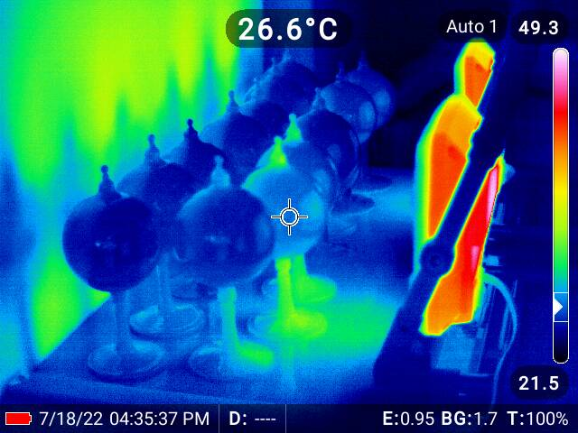
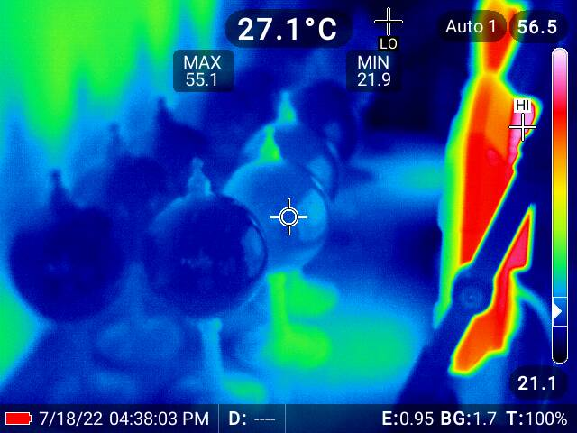
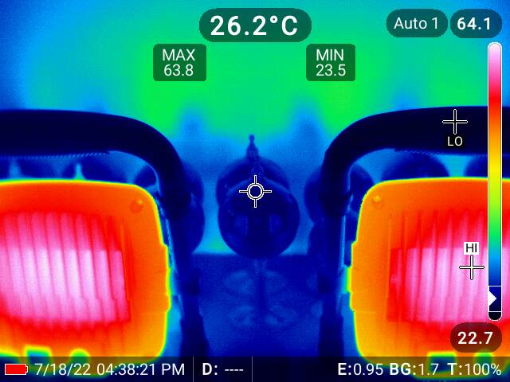
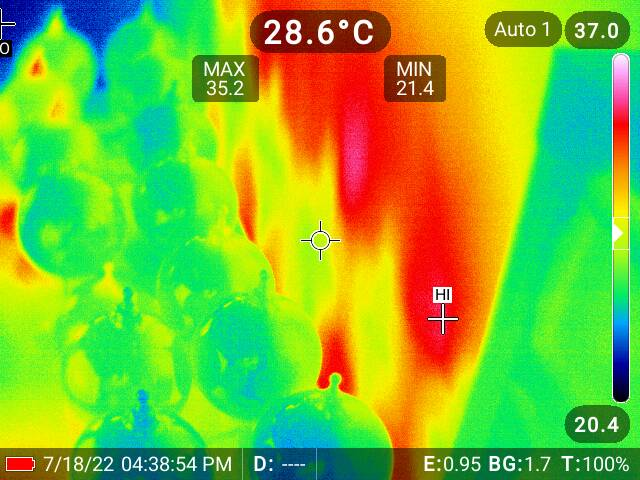
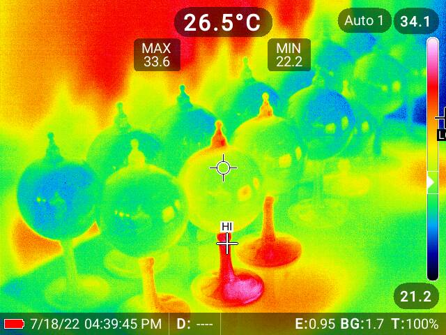

Fall 2026 · Laboratory 6
Radiometer
Measure rotation, illumination response and thermal history.
Connect heat transfer and rarefied gas dynamics to a visible rotor. Compare two lamp positions and examine startup and light-off behavior.
See the experiment
Our radiometers under the LED lamps: watch the complete 15-second bench clip, with audio removed.

A thermal view of the apparatus
Images from our November 16 test with Joe Condon. Browse all 19 images using the arrows. Open any image to inspect its original readings and color scale.










These are apparent surface readings, not temperatures of the sealed vanes. Each image uses an automatic color scale; identical colors across images need not mean identical temperatures. The camera’s displayed date was not set correctly. These views are not a calibrated cooling time series.
Prepare and analyze
Laboratory guide
Two lamp positions, up to four clips per position, and step-by-step MATLAB analysis.
Pre-Lab 6
Complete Q1–Q6: short guided reading, measurement planning and molecular Monte Carlo.
Lecture 07 · Radiometer
Course videos, molecular mechanism and the complete bench sequence.
MATLAB files
Mark passages, calculate rpm and compare illumination runs using your recorded settings.
More setup and camera videos
Camera and lamp setup
Silent excerpts show the equipment and camera workflow. Use the original acquisition file and verified capture rate for passage timing.
Earlier demonstrations
Prior apparatus recordings from May 2026. These silent excerpts demonstrate setup and vane appearance; their playback time is not a verified acquisition clock.
At the bench
Test A: place the bulb immediately beside the lamp (nominal 0 cm), without pressing the glass; record the actual gap. Test B: choose one gap between 1 and 3 cm. Use the same bulb and lamp power, starting each test cooled and at rest. Record bulb ID, estimated vane dimensions, actual gap, lux, glass temperatures and capture fps. No additional distance or brightness sweep is required.
- Startup. Start camera recording, then immediately switch on the lamp. Save up to 17 s and note the switch frame.
- Later lamp-on. Leave the lamp on. About one minute after clip 1 ends, record up to 17 s. Log the elapsed time from light-on to its first frame.
- Light-off. Start a new recording while the lamp is on, then switch it off immediately. Save up to 17 s and note the switch frame.
- Later lamp-off. About one minute after clip 3 ends, log your check time from light-off. If still turning, record up to 17 s. If stationary, record that observation and skip the fourth clip.
Analysis and report
Mark passages with Mark_Lab6_Passage_Frames.m and verify p yourself. Run_Lab6_Radiometer.m calculates rpm and angular speed from your marks and capture fps. Complete the eight-row A/B comparison log, then run Compare_Lab6_Illumination_Runs.m. Show the two tests on separate lamp-on and lamp-off clocks and compare late-on speed with lux. The code does not automatically track vanes, detect direction or fit decay time T. See the guide for report outputs.